z_q = e_k, \quad k = \arg\min_j \| z_e - e_j \|_2
r_0 = z_e, \quad z_q^{(i)} = \text{VQ}_i(r_{i-1}), \quad r_i = r_{i-1} - z_q^{(i)}
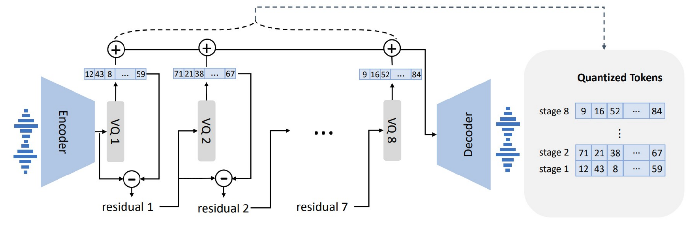
c_i = f\bigl(r_{i-1}\bigr) = f\bigl(z_e - \textstyle\sum_{j=1}^{i-1} e_{c_j}\bigr)
\hat{z}_i = \left\lfloor \frac{L_i - 1}{2} \cdot \tanh(z_i) \right\rceil
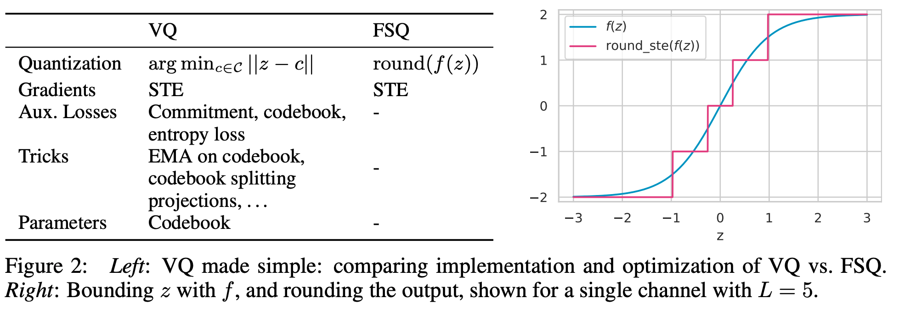
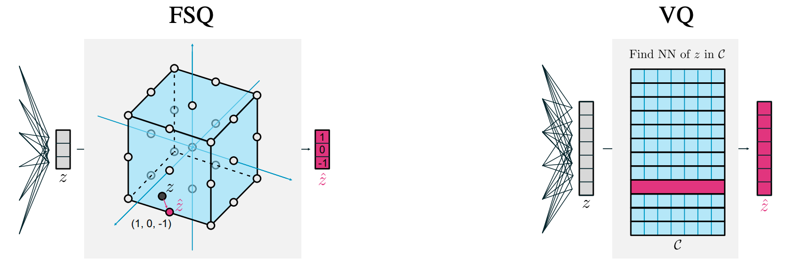
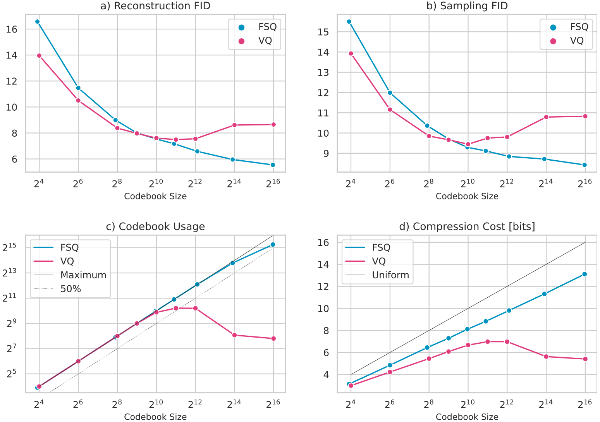
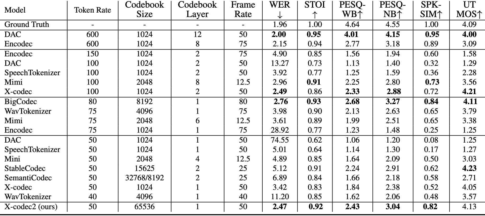
Evaluation protocol borrowed from BASE TTS:
| Category | Example | 1 (Bad) | 2 (Ok) | 3 (Good) |
|---|---|---|---|---|
| Compound Nouns | “stone-built quaint countryside holiday cottage” | Fails to recognise | Unnatural stress | Natural phrasal stress |
| Emotions | “Oh my gosh! Are we really going to the Maldives?” | No audible emotion | Present but insufficient | Correct recognition |
| Foreign Words | “mise en place … pièce de résistance” | Incorrect pronunciation | Foreign accent, not quite right | Correct rendering |
| Paralinguistics | “Shh, Lucy, shhh, we mustn’t wake…” | No recognition | Distinct but unnatural | Natural rendering |
| Punctuations | “Emergency @ home; call ASAP! … #familymatters” | Glitches on # or & | No glitch, incorrect | Correct pausing |
| Questions | “will the ministers find the answers in time?” | Wrong intonation | Largely correct | Correct intonation |
| Syntactic | “The movie that De Moya … was a box-office hit” | Fails to parse | Parses but unnatural | Correct & natural |
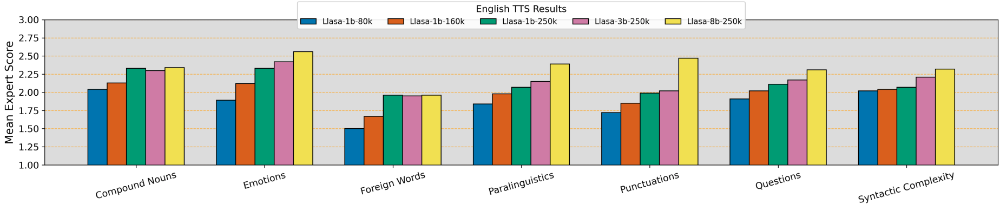
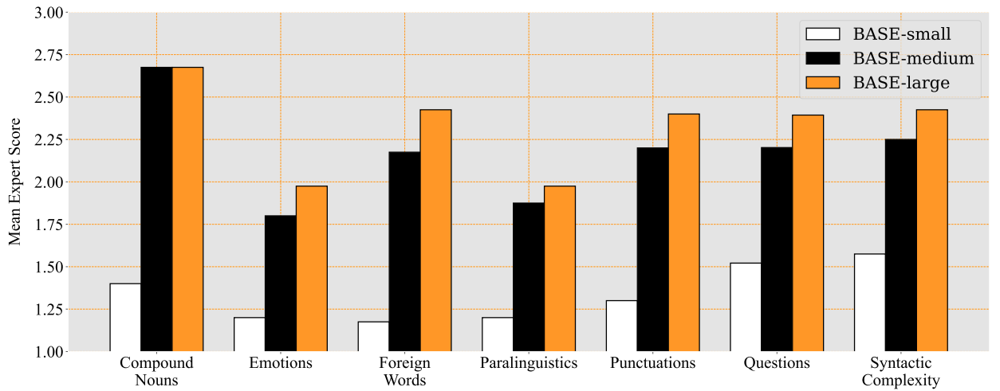
Inference compute scaling — three strategies:
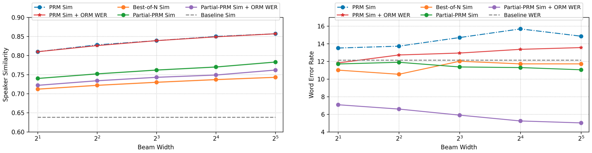
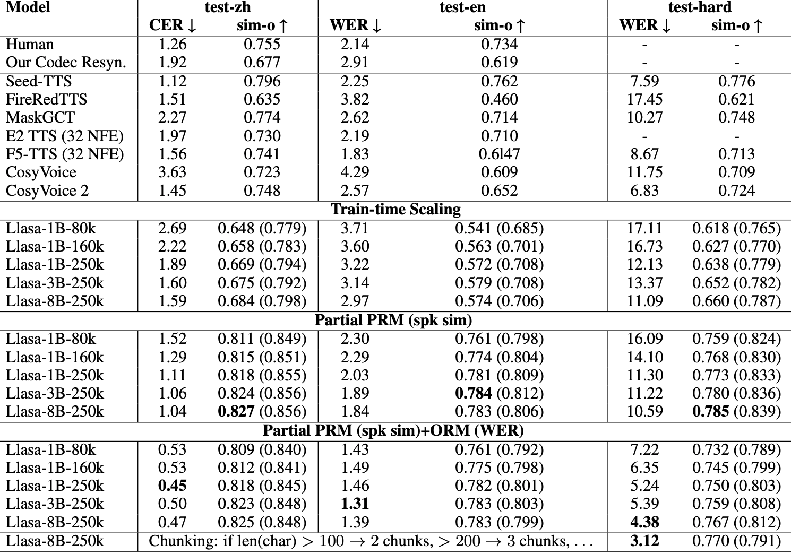
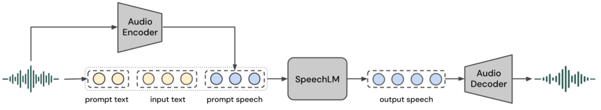
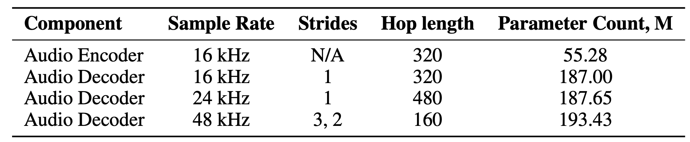
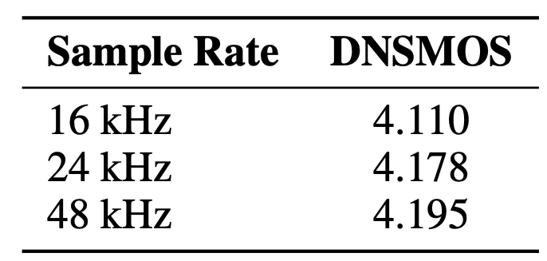
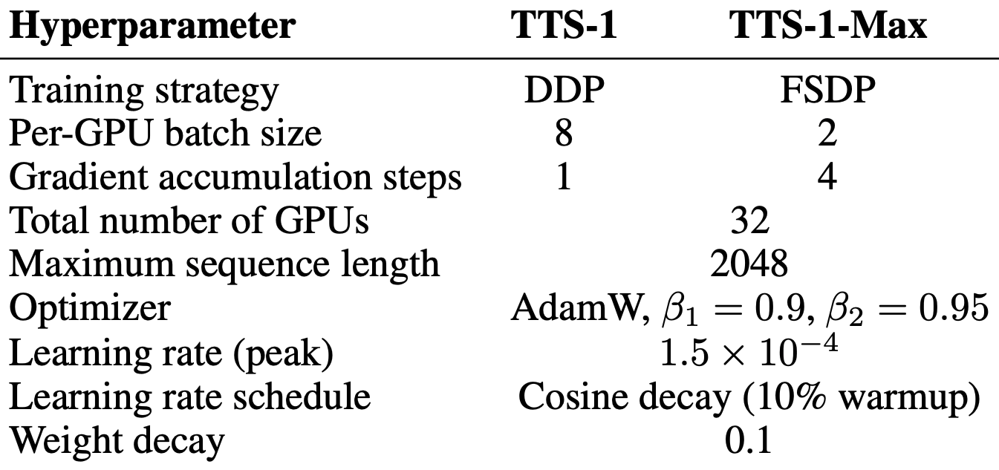
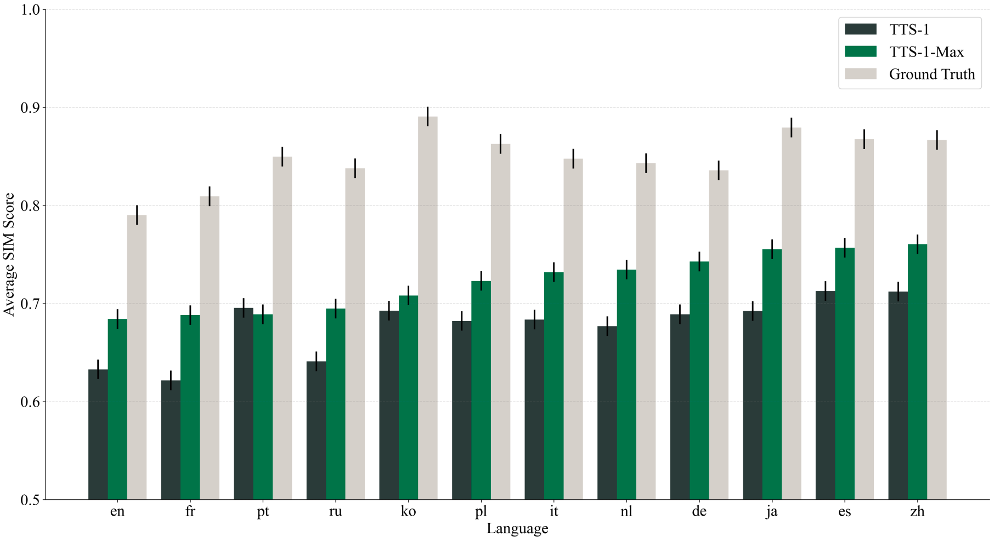
<|begin_of_text|> x_1, \dots, x_T <|speech_start|> y_1, \dots, y_S <|speech_end|>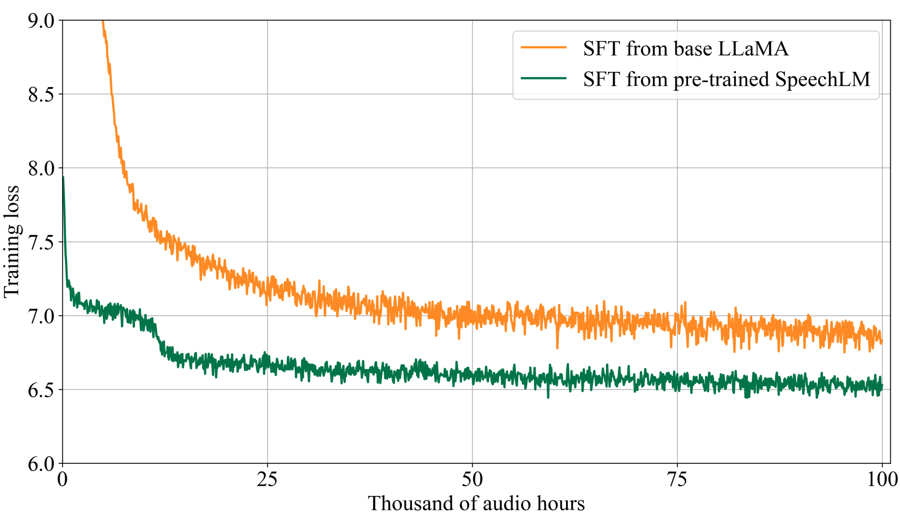
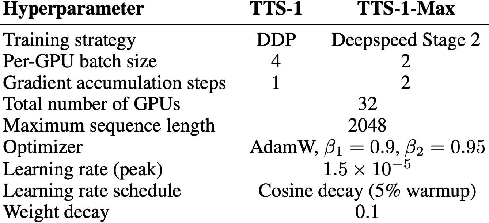
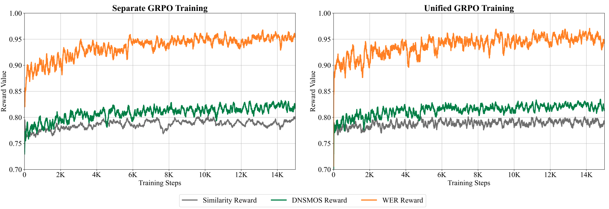
[angry], [whispering], [laugh], [sigh]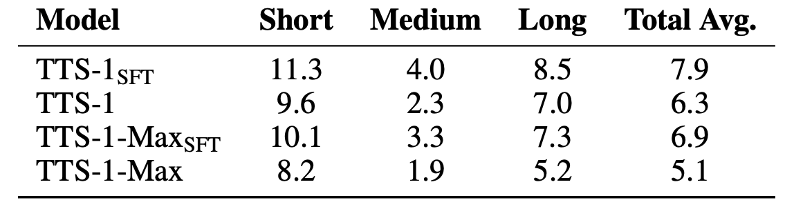
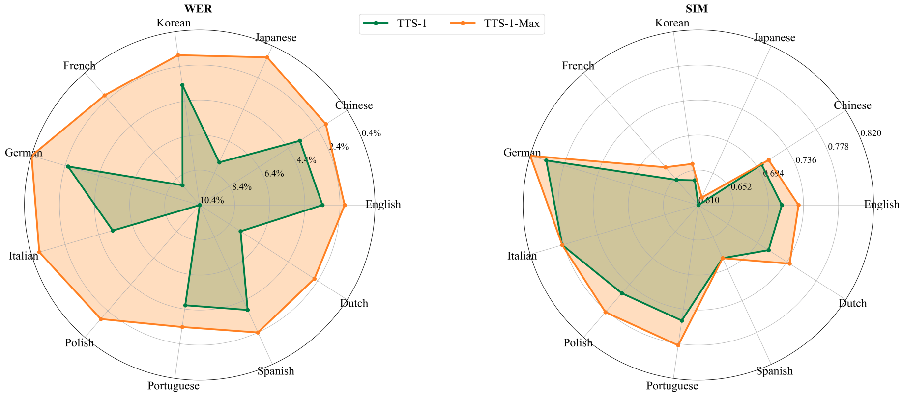
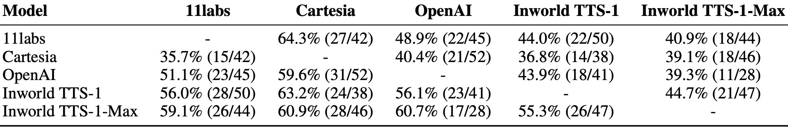
Questions?